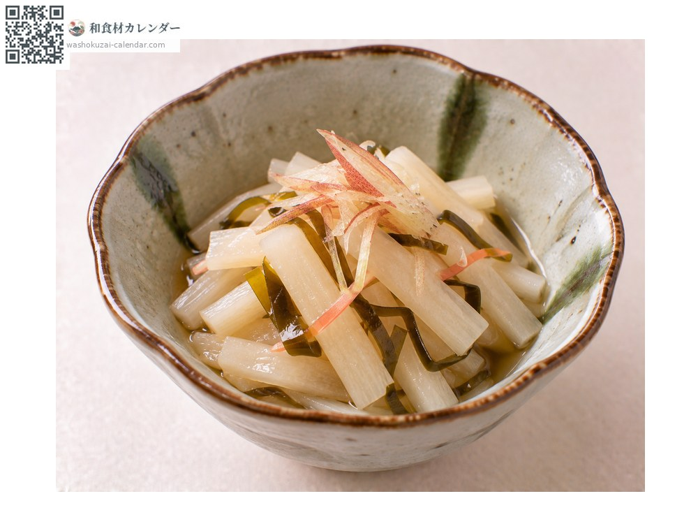
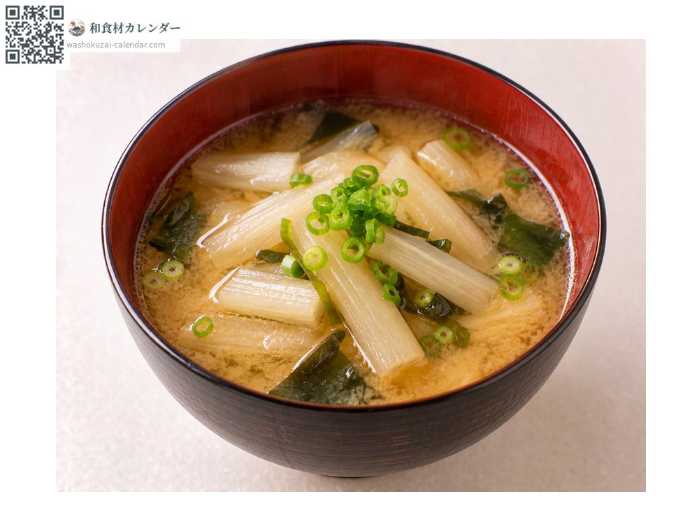
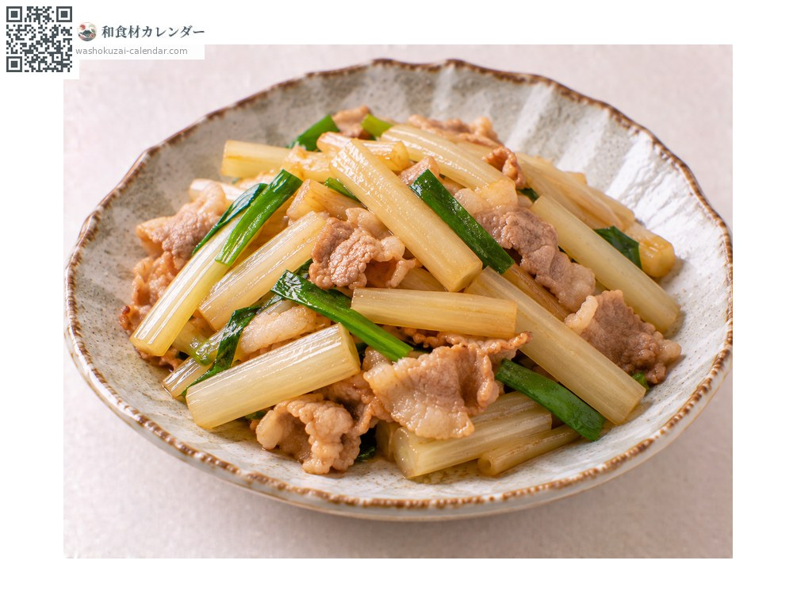

野菜
ハスイモ
はすいも
別名・別表記蓮芋、芋茎、ずいき、hasuimo、zuiki
旬は7月・8月・9月

旬の時期
1月
2月
3月
4月
5月
6月
7月
8月
9月
10月
11月
12月
旬出回り
調理法

酢の物
塩もみして酢で和える。しゃきしゃきした食感。

味噌汁
実として入れる。出汁をよく吸う。

炒め物
油と相性が良い。食感が活きる。
選び方
茎が太く張りがあり、切り口が瑞々しいもの。皮に傷がないもの。
保存方法
皮をむいて水に浸し冷蔵。2〜3日以内に使い切る。
主な産地
豆知識
サトイモの仲間だが、食べるのは茎（葉柄）の部分。高知では「りゅうきゅう」と呼ばれ、夏の食卓に欠かせない。中がスポンジ状で出汁をよく吸う。イモは食用にならない。